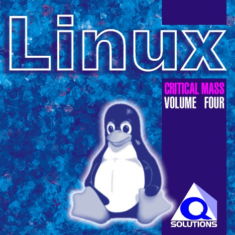

The CRITICAL MASS Open Source Distribution Project

The Critical Mass Project is an open Source Software Distribution project. As an Open Source distribution project the goal is to allow as many people as possible to benefit from the efforts of the Open Source development community. In order to achieve this the products are affordably priced.
All the software is distributed under the terms of the GNU General Public License. The source code for this software is available on the internet. If enough interest is shown, later volumes of Critical Mass will include source code CDs. More information on the direction of the Critical Mass is described in this page: Target Market & Marketing Strategy.
The latest volume in the Critical Mass product range is Critical Mass Volume 4, containing the latest release of the most popular distribution of the Linux operating system, Red Hat 6.0. Earlier volumes contained earlier versions of Red Hat, and Red Hat's Power Tools, a collection of applications for Linux.
Critical Mass is distributed by Workgroup Distribution, a Siltek Company.
The Critical Mass project is brought to you by Q Solutions.